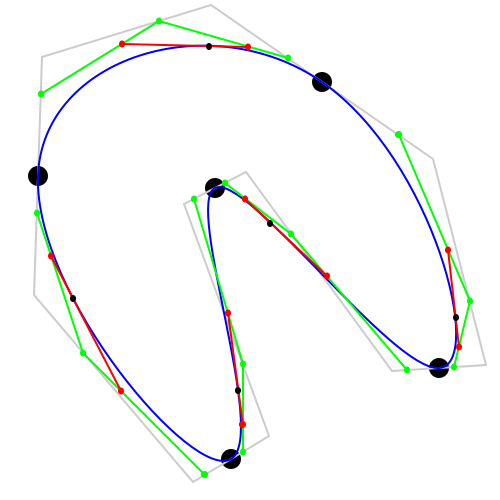

Main text can be found: https://github.com/xyzzy/scripted-svg
The SVG is interactive. You can drag the black pads to change the curve.
You need to host the `SVG` image on gh-pages.
Standard `README.md` links do not open in a new window.
Some suggested ways of using a `SVG` image (size is 500x500):
<img src="scripted-svg.svg" width="200" height="200" alt="SVG">

<embed src="scripted-svg.svg" type="image/svg+xml" width="200" height="200">
NOTE: `SVG` is interactive, you can move the black pads to change the curve.
NOTE: The scaling has unexpected effects with the mouse event handlers.
NOTE: Avoid loading from `raw.githubusercontent.com`, it sends the `HTTP` header `"Content-Security-Policy: default-src 'none'; style-src 'unsafe-inline'; sandbox"` which disables the javascript.
<a href="scripted-svg.svg" target="_blank"> <img src="scripted-svg.svg" width="200" height="200" alt="SVG"></a>
NOTE: The `SVG` when opened will full-screen.
<a href="scripted-svg.svg" target="_blank"> <img src="scripted-svg.html" width="200" height="200" alt="SVG"></a>